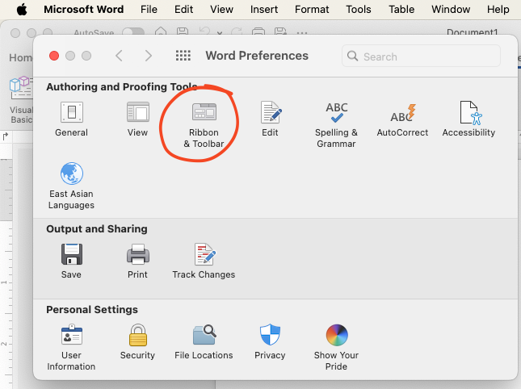

3 Enabling Developer Tab
To use macros in Microsoft Word, the Developer tab must first be enabled. The Developer tab provides access to advanced tools, including options for creating and running macros. Follow the steps below to enable the Developer tab in Word.
3.1 Steps for macOS
- Open Word Preferences:
- Open Microsoft Word.
- Click on the Microsoft Word menu in the top-left corner of your screen and select Preferences.
- Open Microsoft Word.

- Access Ribbon and Toolbar Settings:
- In the Preferences window, click on Ribbon and Toolbar.

- Enable Developer Tab:
- In the Ribbon and Toolbar settings, locate the Customize the
Ribbon section.
- Under the list of main tabs, find Developer and check the
box next to it.
- Click Save to apply the changes.
- In the Ribbon and Toolbar settings, locate the Customize the
Ribbon section.
- Verify:
- The Developer tab should now appear in the Word toolbar at the top of the window.
3.2 Steps for Windows (similar workflow)
- Open Word Options:
- Open Microsoft Word.
- Click on the File tab and then select Options.
- Open Microsoft Word.
- Access Customize Ribbon Settings:
- In the Word Options dialog, click on Customize Ribbon in the left-hand menu.
- Enable Developer Tab:
- In the Customize Ribbon section, locate the list of Main Tabs.
- Find Developer in the list and check the box next to it.
- Click OK to save your changes.
- In the Customize Ribbon section, locate the list of Main Tabs.
- Verify:
- The Developer tab should now be visible in the Word toolbar at the top of the window.
Once the Developer tab is enabled, you’re ready to start working with macros! Proceed to the next chapter to learn how to create and run your first macro.